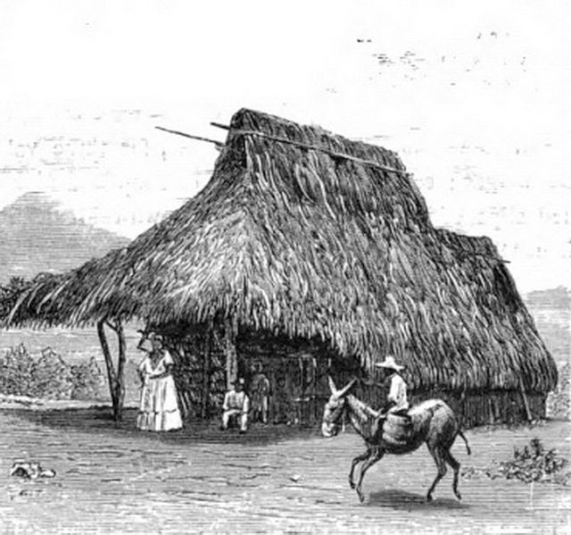
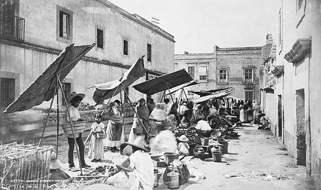
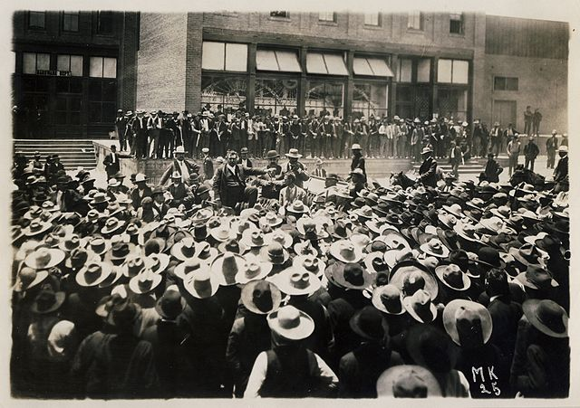
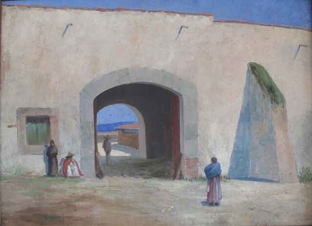

⟵
Causas de la Revolución Mexicana
Desigualdad social y económica

Falta de democracia y reelección perpetua
Explotación laboral en haciendas y fábricas

Represión de movimientos obreros

Concentración de tierras en pocas manos
